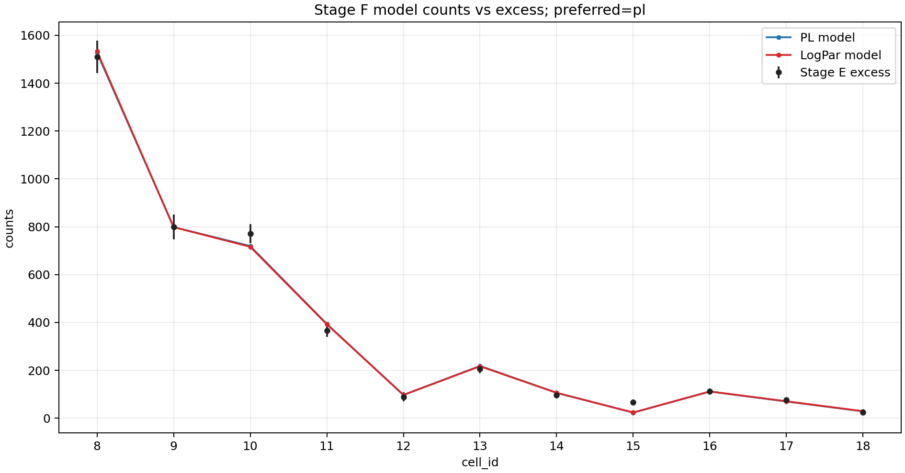
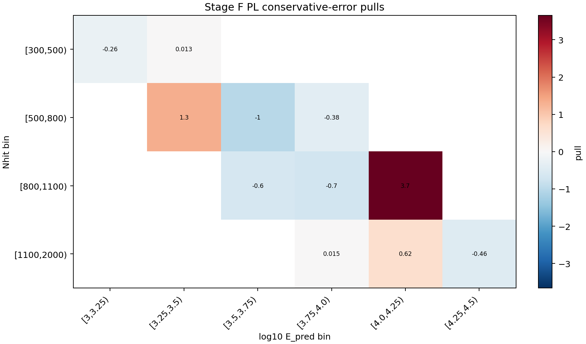

Stage F 前向折叠拟合报告
本页记录当前 Stage F 的目的、输入、方法和结果：把假设的 Crab 能谱通过 Stage A 二维响应折叠到观测 cell，与 Stage E 的逐 cell excess 做拟合对比。当前报告固定使用 cells 8-18，作为进入 Stage G 的 diagnostic baseline。
结论摘要
保守误差口径下，当前首选模型是 pl。Reference-count preflight 状态为 passed，该 run 的状态是：可作为 Stage G diagnostic baseline。
cells8to18_stageg_diag3156.15，Stage E excess 为 4118.28，observed/expected = 1.30484。
为什么做 Stage F
Stage A 给出 MC 响应 A_eff(E_true, theta)，Stage E 给出观测侧每个 cell 的 N_on、背景期望 B_on 和 excess。Stage F 的作用是把二者接起来：不从 E_pred 反推真实能量，而是把一个物理能谱假设从真实能量空间前向折叠到观测 cell 空间，再和 Stage E excess 比较。
这一步有两个检查目标：第一，确认 Stage A 的绝对响应归一化和 Stage E 的信号量级在同一数量级；第二，为 Stage G 的 SED 点提供一个冻结谱形的全局拟合基准。
Stage F 做了什么
本 run 读取 Stage A 的二维响应和 Stage E 的逐 cell 信号表，按 Crab 在观测窗口内的天顶角曝光分布计算每个 cell 的预期信号数。拟合统计量是保守误差口径下的 chi-square：
chi2 = sum_b ((excess_b - N_exp,b) / sigma_b)^2
谱模型包括幂律 PL 和 LogPar。LogPar 只有在相对 PL 的 chi2 改善达到阈值时才作为首选；本 run 的改善量为 0.038992，因此保留 PL。
- Stage A response:
/mnt/mydisk/server/projects/energy_reconstruction/apply/output/stage_a/response_2d.npz - Stage E signal:
/mnt/mydisk/server/projects/energy_reconstruction/apply/output/stage_e/runs/codex_stage_e_contract_full/signal_v1.npz - Cell subset:
/mnt/mydisk/server/projects/energy_reconstruction/apply/config/cell_subset_cells8to18_stageg_diag.csv
Cell subset 说明
当前 Stage F 收尾版固定使用 cells 8-18。低 Nhit / 低 E_pred 的 cells 1-7 在 skymap/sideband quicklook 和 Stage F residual 中表现为系统异常，暂不进入 Stage G diagnostic baseline。cells 5、6 只保留为 transition/systematics probe，不加入本报告的 baseline。
- Included cells:
8, 9, 10, 11, 12, 13, 14, 15, 16, 17, 18 - Excluded cells:
1, 2, 3, 4, 5, 6, 7
拟合参数
- PL:
phi0=2.599910e-12,gamma=2.84847, p-value0.03719，chi2/ndof =17.831/9。 - LogPar:
phi0=2.581086e-12,alpha=2.84998,beta=-0.00922665, p-value0.02284，chi2/ndof =17.792/8。
逐 cell 残差
| cell | Nhit bin | log10 E_pred bin | excess | err | PL model | PL pull | LogPar model | LogPar pull |
|---|---|---|---|---|---|---|---|---|
| 8 | [300,500) | [3,3.25) | 1510.7 | 67.995 | 1528.06 | -0.25534 | 1533.39 | -0.33364 |
| 9 | [300,500) | [3.25,3.5) | 799.135 | 51.116 | 798.457 | 0.013272 | 798.403 | 0.014322 |
| 10 | [500,800) | [3.25,3.5) | 771.378 | 39.225 | 719.398 | 1.3252 | 716.254 | 1.4053 |
| 11 | [500,800) | [3.5,3.75) | 366.324 | 27.417 | 393.874 | -1.0049 | 392.229 | -0.94485 |
| 12 | [500,800) | [3.75,4.0) | 89.1309 | 19.669 | 96.6993 | -0.38479 | 97.162 | -0.40831 |
| 13 | [800,1100) | [3.5,3.75) | 206.784 | 18.794 | 218.112 | -0.60274 | 216.959 | -0.54141 |
| 14 | [800,1100) | [3.75,4.0) | 95.7297 | 14.432 | 105.837 | -0.70036 | 105.897 | -0.70454 |
| 15 | [800,1100) | [4.0,4.25) | 66.9559 | 11.96 | 23.1835 | 3.6599 | 23.4127 | 3.6407 |
| 16 | [1100,2000) | [3.75,4.0) | 111.432 | 12.271 | 111.25 | 0.01487 | 111.571 | -0.011278 |
| 17 | [1100,2000) | [4.0,4.25) | 76.1351 | 10.482 | 69.6117 | 0.62237 | 70.4792 | 0.53961 |
| 18 | [1100,2000) | [4.25,4.5) | 24.5676 | 7.9644 | 28.2629 | -0.46398 | 29.0028 | -0.55688 |
结果图


